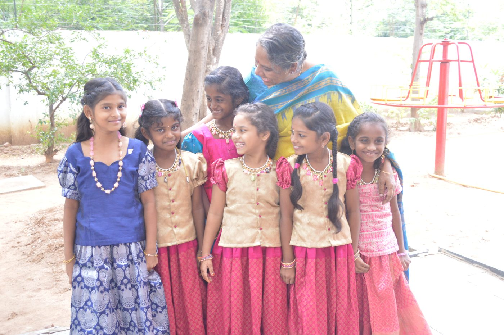

Our Story

A Single Moment of Compassion
It was a hot summer day in Kadapa in 1992 when our founder, Sandhya Puchalapalli, found a two-year-old girl abandoned on the street — left to starve after her father had killed her mother. Shocked and moved by the discovery, Sandhya could not simply walk away. Her overwhelming concern for the child's fate sparked a movement. Together with a small group of like-minded individuals, she set out to create a safe haven for abandoned children and those desperately in need of protection.
The initiative, officially registered as the Vijay Foundation Trust, began in a humble rented space with just six children.
Honoring a Legacy: The Birth of Aarti Home
By 1996, the family had grown to 36 children, and they urgently needed more space. They moved into a new facility and named it Aarti Home. The name was a deeply personal tribute to Sandhya's niece, Aarti — a young girl who had been the organization's very first donor before she tragically passed away at just 18 years old. Through Aarti Home, her spirit of generosity lived on.
Thirty Years of Organic Growth
As the number of children in our care grew, so did our understanding of the profound societal issues that were forcing girls onto the streets in the first place. We realized that simply providing shelter was not enough; we had to address the root causes.
Our evolution over the last three decades has been entirely organic, born out of the immediate needs we saw in our community. Today, more than 30 years later, what started as a small sanctuary for six children has blossomed into a comprehensive umbrella organization dedicated to the holistic upliftment of women and children.
It has become the Aarti way of life: helping girls and women discover their strength, claim their voices, and realize their limitless potential.
Our Vision
We envision a world where every girl is celebrated, educated, and free to write her own story.
Our Mission
Our work is driven by four core pillars.
Care
Providing a loving home for abandoned and orphaned girls, alongside the vital support families need to keep their daughters safe and thriving.
Educate
Unlocking every child's potential through quality education and dedicated community support.
Empower
Fostering independence for women through vocational training, sustainable livelihood opportunities, and strong support networks.
Advocate
Serving as a relentless voice for the vulnerable, campaigning against female foeticide, and fighting for the inherent rights of every girl.
Our Visionary Founder

In 1992, Sandhya Puchalapalli found a two-year-old girl abandoned on the street in Kadapa. That encounter grew into Aarti For Girls — now caring for, educating, and empowering thousands of girls and women across Andhra Pradesh.